10g (9.0.4)
Part Number B10270-01
Library |
Contents |
Index |
| Oracle Discoverer Administrator Administration Guide (Online Help) 10g (9.0.4) Part Number B10270-01 |
|
This chapter explains how you create summary folders manually using Discoverer Administrator (i.e. instead of using Automated Summary Management), and contains the following topics:
Manual summary folder creation is the process of creating summary folders yourself, instead of using Discoverer's Automated Summary Management (ASM) functionality (for more information, see Chapter 13, "Managing summary folders"). It is recommended that you use ASM to create summary folders. However, you might choose to create summary folders yourself, if you want to:
You choose whether to create summary folders using ASM or manually in the first step of the Summary Wizard. To create summary folders manually you select the option I want to specify the summaries myself and complete one of the following tasks:
For information about summary folders and how Discoverer creates and maintains them automatically see Chapter 13, "Managing summary folders".
To create summary folders, the following requirements must be met:
For more information, see Chapter 13, "How to use SQL*Plus to grant the privileges required to create summary folders".
Summary combinations are groupings of items that make up a summary folder. A summary combination maps directly to a materialized view or summary table in the database. Discoverer creates materialized views or summary tables based on the summary combinations you create. Each summary combination defines a different way of combining two or more items in a summary folder. If a Discoverer Plus user executes a query with a combination of items that closely matches those specified in a particular combination, the query will be run against a summary table or materialized view instead of the detail data, resulting in improved response times.
For example, you might create a summary folder against two folder items, Product Key and Product Type.
You might want the summary folder to be used only when the Product Key and Product Type items are used together.
For this example you would not add any summary combinations but accept the default combination, as follows:
|
Combinations |
Combination 1 (default) |
|---|---|
|
Product Key |
selected |
|
Product Type |
selected |
Alternatively, you might want the summary folder to be used for any of the following combinations:
For this example you would add two summary combinations and select the check box next to the items that you want to use as follows:
|
Combinations |
Combination 1 (default) |
Combination 2 |
Combination 3 |
|---|---|---|---|
|
Product Key |
selected |
selected |
not selected |
|
Product Type |
selected |
not selected |
selected |
You can define as many combinations as you need for each summary folder using the Summary Wizard.
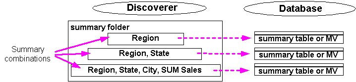
The diagram above illustrates that for every summary combination, Discoverer creates a materialised view or summary table in the database.
If you add multiple summary combinations, Discoverer (where possible) builds the higher level combinations (i.e. combinations with a greater number of items) using the lower level combinations (i.e. combinations with fewer items). This improves performance because:
For example, a summary folder might contain two summary combinations:
Discoverer aggregates the data for the revenue by month and region by accessing the detail data directly. Discoverer then uses data aggregated for the first combination to aggregate the data for the second combination, saving both processing and CPU overhead.
Note: Summary combinations are only available when Discoverer manages the refresh of a summary folder.
There are three things to consider when defining summary combinations:
The key to good summary folder design is to create the most appropriate summary combinations for the pattern of system usage.
Typically you will want queries that are run most often to run the most quickly, even if this requires more database space. Similarly, it is usually desirable for queries that run less frequently to use less database space, even if this means the queries run more slowly.
When creating summary combinations, look for:
If you are creating a summary combination for a popular query, include all the items and joins used in the query. Note that such a summary combination might require considerable database space.
Summary combinations for a more ad hoc environment (where queries are far less predictable) are typically based on different combinations of keys in the main fact table.
For example, in the summary tables below, the columns EUL_SUM200801 and EUL_SUM200802 are mapped to appropriate items in the Sales Fact folder.
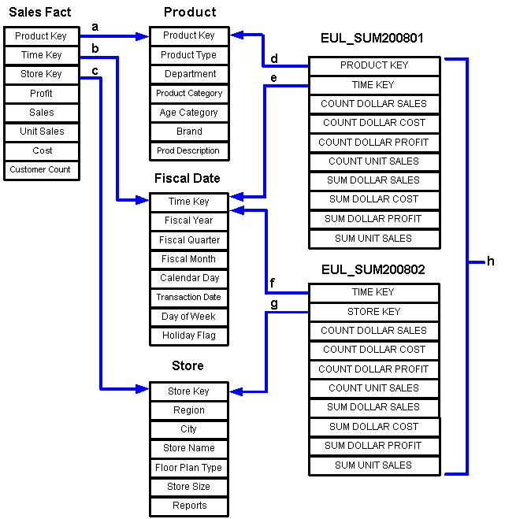
Key to the figure above:
Depending on the query, Discoverer will join a summary table to one or more of the dimension tables (i.e. Store, Product, or Fiscal Date). The dimension table must be joined to the fact table by items defined in the EUL, and the summary table must contain the foreign key items in the fact folder.
For example, if a user requests Product Category, Month and SUM(Dollar Profit), Discoverer will join EUL_SUM200801 to Product and Fiscal Date to obtain results. Discoverer knows about the foreign and primary keys between the Sales Fact table and Product and Fiscal Date, and can apply them to EUL_SUM200801.
We suggest that you build summary combinations in stages. Concentrate first on frequent queries, then on less frequent queries, and finally create a catch all summary combination. Guidelines for setting up summary combinations are as follows:
Include the following in summary combinations:
Additional data point items take up little extra room in the summary tables.
Multiple aggregates do not require much space and can improve performance significantly. Remember that AVG requires the inclusion of SUM and COUNT, which Discoverer uses to calculate the average.
An expression will use a summary folder except under specific conditions. For this reason it is useful to be able to identify when an expression will use a summary folder. The following examples show when an expression will use a summary folder, if that summary folder contains the item SUM(Salary) and SUM(Comm):
In essence, an expression will only use a summary folder when the expression or parts of it and the summarized expression are relationally equal.
Use this option to manually select combinations of EUL items that you want to include in a summary folder.
You might select this option if, for example:
To create summary folders based on items in the EUL.

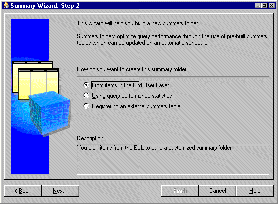
This option is only available if the summary folders feature is enabled. For more information, see Chapter 13, "How to configure the database for summary folders".
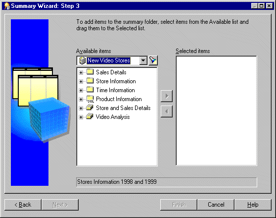
You can select more than one item at a time by holding down the Ctrl key and clicking another item.
Remember to include:
Note: You can select any items and math functions. However, if you select items from different folders, a join must already exist between the folders.
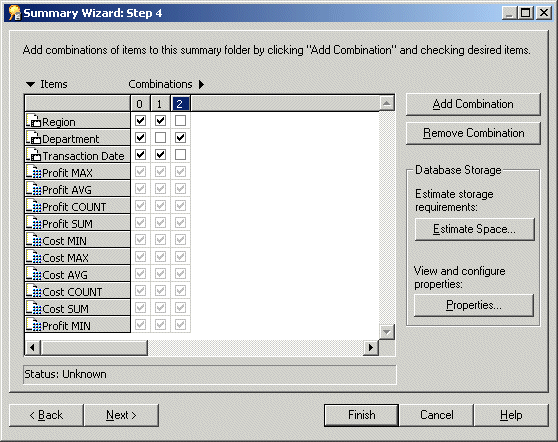
The Summary Wizard: Step 4 dialog enables you to define the summary combinations in the new summary folder.
By default, all the items you selected in the Summary Wizard: Step 3 are included in the first summary combination (in column 0).
The summary combination appears in a new numbered column.
For more information, see "What are summary combinations?"
Hints:
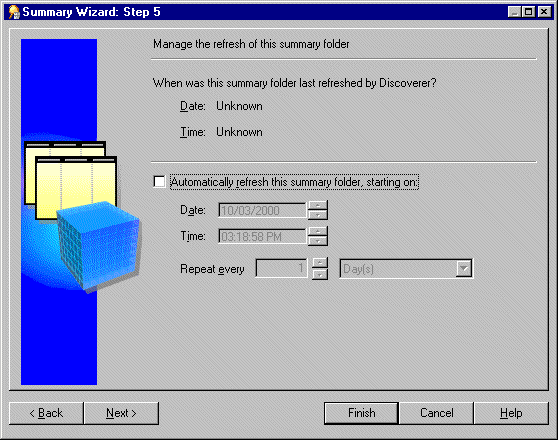
Hint: Do not select this check box if the data is static and will not change, or if you want to refresh the summary folder manually. For more information about manually refreshing summary folders, see "How to manually refresh a summary folder".
The refresh period you specify here is the period of time that will elapse before Discoverer refreshes and updates the data. This refresh pattern will continue until you change the settings.
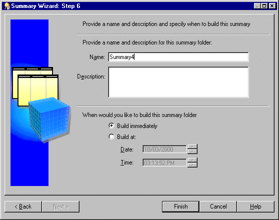
When Discoverer builds the summary folder, it creates:
The build process generates the summary data and marks the summary table/materialized view as Ready to use.
When the process completes Discoverer displays the new summary folder in the "Workarea: Summaries tab".
Query performance statistics are automatically generated when the Collect Query Statistics privilege is switched on for users (for more information, see Chapter 6, "How to specify the tasks a user or role (responsibility) can perform").
You can create a new summary folder based on query performance statistics rather than choosing the items yourself. Discoverer suggests the summary folder items for you based on the query performance statistics that are generated from Discoverer end user queries.
You might select this option if you know that you want to create one or more summary folders based upon specific queries and you do not necessarily want Discoverer to create any other summary folders.
To create summary folders based on query performance statistics:
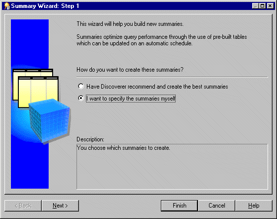
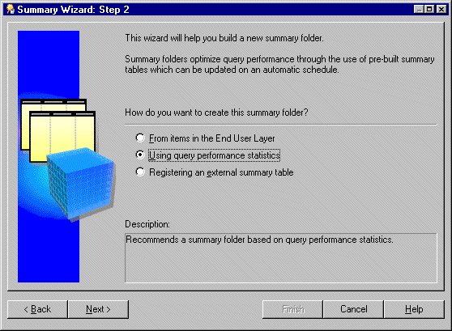
This option creates a summary table or materialized view. It is only available if the summary management feature is enabled. For more information see Chapter 13, "How to configure the database for summary folders".
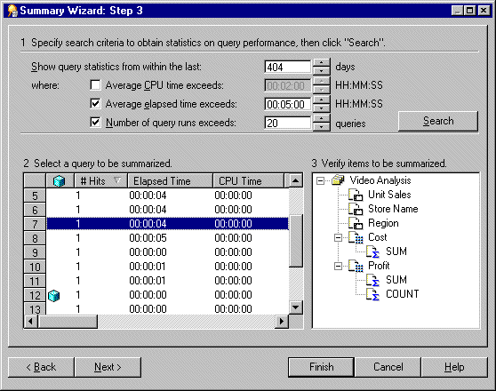
The Summary Wizard: Step 3 dialog is divided into three sections as follows:
If the search time is significant, Discoverer displays a progress bar.
All the queries that match the threshold values in Section 1 are displayed in Section 2. To narrow or expand this list further, re-specify the threshold values.
If a query in the list uses items that are already summarized, a cube icon appears beside the query.
To sort the display order of items in a column in Section 2, click the relevant column heading.
The query's folders, joins, and items appear in Section 3.
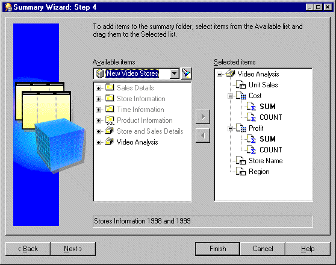
The Summary Wizard: Step 4 dialog enables you to select items to include in the summary folder. By default, the Selected items list contains the items from the query you selected on the previous page of the Summary Wizard.
You can select more than one item at a time by holding down the Ctrl key and clicking another item.
Remember to include:
Note: You can select any items and math functions. However, if you select items from different folders, a join must already exist between the folders.
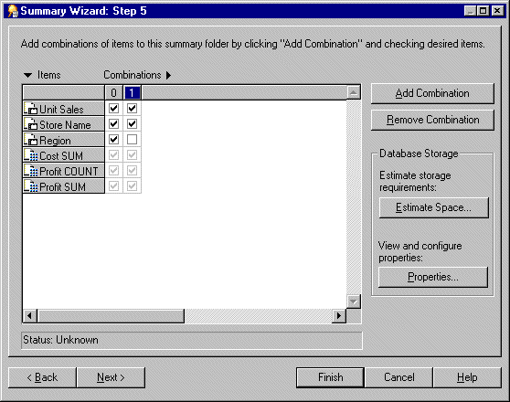
The Summary Wizard: Step 5 dialog enables you to define the summary combinations in the new summary folder.
By default, all the items you selected in Summary Wizard: Step 4 are included in the first summary combination (in column 0).
The summary combination appears in the new numbered column.
For more information, see "What are summary combinations?".
Note: You can view and edit database storage properties for a selected Summary Combination by clicking Properties. For more information, see "How to edit database storage properties of summary combinations for a summary folder".
Hint: To remove an unwanted summary combination, select the relevant column number and click Remove Combination.
Hint: Do not select the check box if the data is static and will not change, or if you want to refresh the summary folder manually. For more information about manually refreshing summary folders, see "How to manually refresh a summary folder".
The refresh period you specify here is the period of time that will elapse before Discoverer refreshes and updates the data. This refresh pattern will continue until you change the specification.
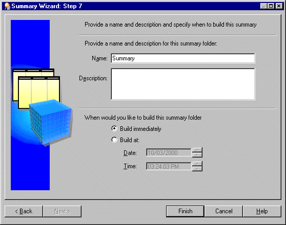
When Discoverer builds the summary folder, it creates:
The build process generates the summary data and marks the summary table/materialized view as 'Ready to use'.
When the process is complete Discoverer displays the new summary folder in the "Workarea: Summaries tab".
The business area named Query Statistics that is supplied with Discoverer includes a workbook that analyzes the following:
This section describes how to create a new summary folder based on summary tables created by an application other than Discoverer. Summary tables created by an application outside Discoverer are called external summary tables. Note that this task also applies to creating summary folders based on external views.
To create summary folders based on external summary tables:
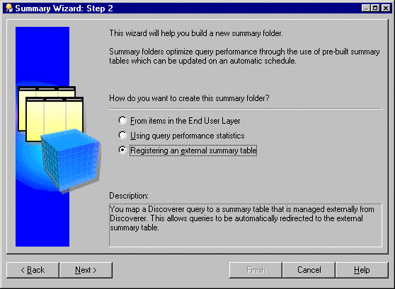
The result of completing this task is that the database will create a materialized view from the summary table created by the external application.
Note that Discoverer will continue to create summary tables under the following conditions:
For more information, see Chapter 15, "What is different about summary folders that are based on external summary tables?".
For more information, see Chapter 15, "What is different between mapping external summary tables and views to EUL items, with Oracle 8.1.7 (or later) Enterprise Edition databases?".
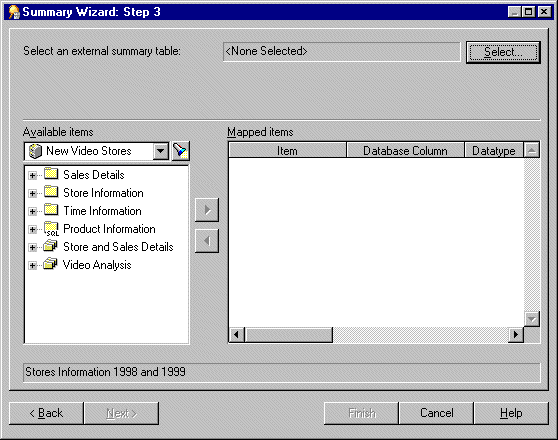
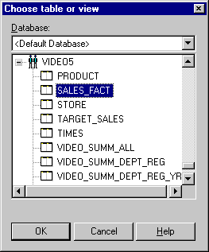
Note: When connected to an Oracle 8.1.7 (or later) Enterprise Edition database, Oracle prevents a user from registering an external summary over a database link. This is because the database does not allow a materialized view to be created over a database link. However, this may be achieved by creating a view in the database that the EUL is in and referencing the external summary in the view. This view may then be registered within Discoverer as an external summary.
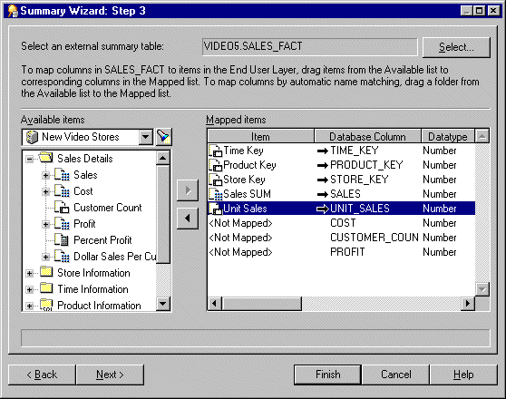
You now map each database column in the external summary table to a corresponding item in the EUL.
Hint: If several items from the same folder correspond to columns in the external summary table, you can drag and drop the folder onto an item in the Mapped items list. Discoverer Administrator attempts to map the correct items to the database columns using the item names. Note that you will have to map items to any columns for which Discoverer Administrator cannot identify corresponding items.
Hint: To remove the mapping between a database column in the external summary table and an item in the EUL, select the relevant row in the Mapped items list and click the left arrow button.
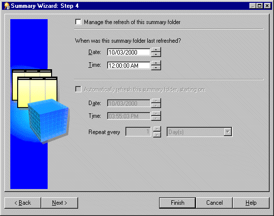
Hint: Do not select the check box if the data is static and will not change, or if you want to refresh the summary folder manually. For more information about manually refreshing summary folders, see "How to manually refresh a summary folder".
The refresh period you specify here is the period of time that will elapse before Discoverer refreshes and updates the data. This refresh pattern will continue until you change the specification.
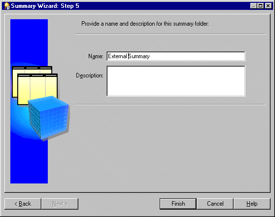
When the process is complete, Discoverer displays the new summary folder in the "Workarea: Summaries tab".
This section describes how you can refresh a summary folder. You might need to refresh a summary folder if the database has changed.
To manually refresh a summary folder:
Note: Discoverer does not display the Refresh Summaries dialog for externally managed summary folders.
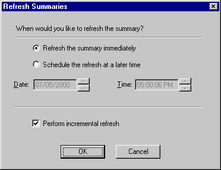
You might want to perform an incremental refresh when the detail data in the database tables has changed little since the last refresh. Performing an incremental refresh saves time, as it updates only those changes committed to the database since the last refresh.
For further information on the conditions required for incremental refresh, see Oracle9i Data Warehousing Guide.
For more information about refreshing summary folders, see:
This section describes you how to edit the properties of a summary folder.
To edit the properties of a summary folder:
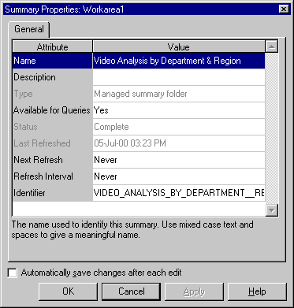
Hint: You can select more than one summary folder at a time by holding down the Ctrl key and clicking another summary folder. If all the selected folders have the same value for a particular property, that value is shown. If the selected folders have different values for a particular property, no value is shown for the property. Any changes you make here are applied to all selected summary folders.
You might want to edit a summary folder to:
To edit a summary folder:
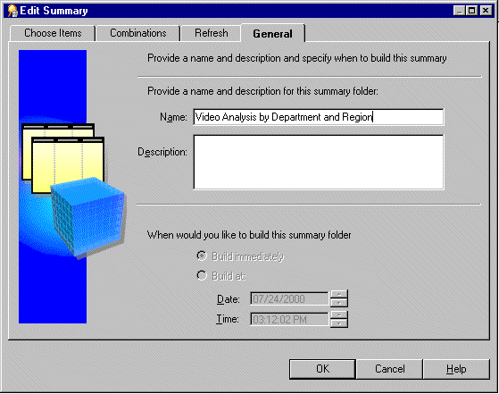
The Edit Summary dialog is divided into four tabs. Each tab corresponds to a step of the Summary Wizard as follows:
Note: The Combinations tab is not displayed for summary folders that are based upon external summary tables.
You can use Discoverer Administrator to control how summary combinations are stored in the database by editing the database storage properties.
Note: Database storage properties are not available for summary folders that are based on external summary tables. For more information, see Chapter 15, "What is different about summary folders that are based on external summary tables?".
To edit the database storage properties of summary combinations for a summary folder:
For more information about the Database Storage Properties dialog tabs, see:
This section describes how you can delete a summary folder. When you delete a summary folder, the underlying summary tables or materialized views are also deleted.
To delete a summary folder:
Hint: You can select more than one summary folder at a time by holding down the Ctrl key and clicking another summary folder.
You can review the objects that might be affected by deleting this summary folder.

The Impact dialog enables you to review the other EUL objects that might be affected when you delete a summary folder.
Note: The Impact dialog does not show the impact on workbooks saved to the file system (i.e. in .dis files).
Discoverer Administrator deletes the selected summary folder from the EUL and drops the summary table/materialized view from the database.
This section describes how you can view the status of the summary table/materialized view for a summary folder.
To view the status of the summary table/materialized view for a summary folder:
Discoverer displays the status of the summary table/materialized view in the status bar at the bottom of the dialog.
For more information about validating folders and summary status messages, see:
|
|
 Copyright © 2003 Oracle Corporation. All Rights Reserved. |
|